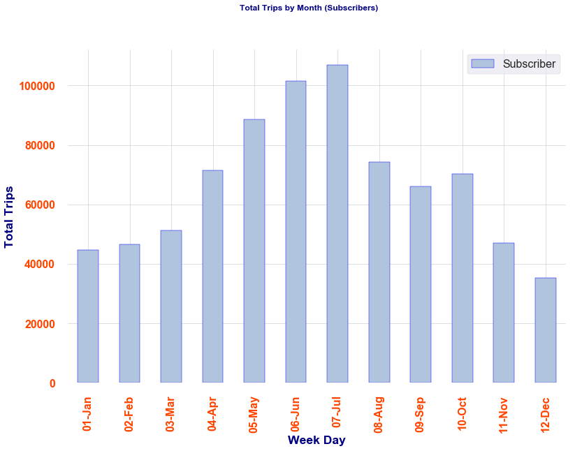

For example, most usage during the weekdays is by subscribers and there is a slight uptick on Saturdays and Sundays for Daily Customers. More than likely, a subscriber's profile is a daily commuter with a bike ride of 10 minutes or less
While subscribers use Citi bikes more often, the duration is significantly less when compared to daily customers.
Half of all trips lasted less than 5.7 minutes between 1/1/17 and 7/31/19.
For both subscribers and daily pass customers, usage increases substantially during the summer months
Monthly trips for subscribers spike in the summer months but do not drastically dropoff like Daily Customers